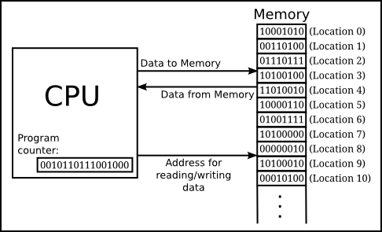

1 Introducción a la Computación
1.1 ¿Qué es una Computadora?
La palabra “computadora” tiene dos orígenes principales:
- Etimología:
- Latín: La palabra “computadora” proviene del verbo latino “computare”, que significa “calcular”. Este verbo se deriva de la palabra “putare”, que significa “contar” o “podar”.
- Español: La palabra “computadora” se formó a partir del verbo “computar”, que significa “realizar cálculos”. Este verbo se deriva del latín “computare”.
- Influencia del inglés:
- Siglo XX: A principios del siglo XX, la palabra inglesa “computer” se introdujo en español para referirse a las máquinas calculadoras mecánicas.
- Adaptación: La palabra “computer” se adaptó al español como “computadora” para mantener la pronunciación similar.
Según la RAE una computadora (o computador) es una Máquina electrónica que, mediante determinados programas, permite almacenar y tratar información, y resolver problemas de diversa índole. https://dle.rae.es/computador
1.2 Principales Componentes de una Computadora
Una computadora está formada por dos partes principales: hardware y software.
Hardware:
Es la parte física de la computadora, que puedes ver y tocar.
Se compone de muchos componentes, como:
- Unidad central de procesamiento (CPU): Es el “cerebro” de la computadora, que ejecuta las instrucciones del software.
- Memoria (RAM): Almacena datos e instrucciones de forma temporal mientras la computadora está funcionando.
- Almacenamiento: Almacena datos de forma permanente, como el sistema operativo, programas y archivos personales.
- Dispositivos de entrada: Permiten al usuario interactuar con la computadora, como el teclado, el mouse y la pantalla táctil.
- Dispositivos de salida: Permiten a la computadora mostrar o reproducir información, como el monitor, la impresora y los altavoces.
Software:
Es la parte intangible de la computadora, que le da instrucciones al hardware qué hacer.
Se compone de muchos programas, como:
- Sistema operativo: Controla el funcionamiento básico de la computadora y proporciona una interfaz para ejecutar otros programas.
- Aplicaciones: Programas que realizan tareas específicas, como navegar por internet, escribir documentos o jugar juegos.
Si bien todos los componentes de un computador son importantes para su funcionamiento, la CPU (Unidad Central de Procesamiento) y la memoria RAM (Memoria de Acceso Aleatorio) son dos piezas clave para comprender los conceptos básicos de la programación.
1.3 Memoria RAM:
- Función: La memoria RAM actúa como un gran almacén de información temporal. Aquí se almacenan todo tipo de datos: números, textos, imágenes, etc., mientras el computador está funcionando.
- Analogía: Imagina la memoria RAM como tu escritorio. Puedes colocar allí libros, papeles, lápices y otros objetos que necesitas para trabajar en el momento. Cuando terminas con ellos, los guardas en su lugar para usarlos más tarde.
- Importancia: La memoria RAM es crucial para la velocidad del computador. Si la memoria RAM es insuficiente, el computador puede ralentizarse o incluso bloquearse. CPU:
1.4 La CPU
- Función: La CPU se considera el “cerebro” del computador. Es la responsable de realizar las operaciones matemáticas y lógicas sobre los datos almacenados en la memoria RAM.
- Componentes: La CPU se compone de varios elementos clave:
- Unidad de control (UC): Es el director de orquesta de la CPU. La UC recibe las instrucciones del software, las decodifica y las envía a las unidades correspondientes para su ejecución.
- Unidad aritmético lógica (ALU): Es la calculadora de la CPU. Realiza operaciones matemáticas y lógicas como sumar, restar, comparar y multiplicar.
- Registros: Son pequeños espacios de almacenamiento rápido dentro de la CPU. Se utilizan para almacenar temporalmente datos e instrucciones que están siendo procesados.
- Analogía: Imagina la CPU como una fábrica. La UC es el jefe de planta que recibe las órdenes de producción, la ALU es la maquinaria que realiza el trabajo y los registros son las cintas transportadoras que mueven los materiales.
- Importancia: La velocidad y la potencia de la CPU determinan en gran medida el rendimiento del computador. Una CPU más rápida puede ejecutar programas más complejos y realizar tareas con mayor rapidez.
1.5 Relación entre CPU y memoria RAM:
La CPU y la memoria RAM trabajan juntas en estrecha colaboración. La CPU lee datos e instrucciones de la memoria RAM, los procesa y luego guarda los resultados en la memoria RAM.
La velocidad de la memoria RAM afecta directamente la velocidad a la que la CPU puede acceder a los datos. Una memoria RAM más rápida permite que la CPU funcione de manera más eficiente.

Para comprender mejor el funcionamiento de la memoria y la CPU en un computador, podemos utilizar una analogía sencilla:
Imaginemos la memoria RAM como un armario enorme con una gran cantidad de cajones numerados. Cada cajón representa una celda de memoria, donde se almacena un único dato. El número de cada cajón, también conocido como posición o dirección, identifica la celda específica en la memoria.
La CPU sería como una persona que trabaja en el armario. Esta persona tiene dos herramientas principales:
- Calculadora (UAL): La UAL realiza operaciones matemáticas y lógicas sobre los datos.
- Lista de instrucciones: Esta lista indica a la persona qué operaciones realizar con los datos y dónde encontrarlos en el armario.
Cada posición de memoria permite almacenar una secuencia de unos y ceros de tamaño fijo. La elección de ceros y unos obedece a la sencillez con que es posible construir dispositivos binarios, es decir, que pueden adoptar dos posibles estados: encendido/apagado, hay corriente/no hay corriente, cierto/falso, …
1.6 Codificación de la Información
Veamos ahora como se representa la información con números binarios y como se llega desde esta codificación de la información a los diferentes tipos de lenguajes de programación.
Hagámozlo mediante un ejemplo:
Supongamos que queremos sumar dos números, \(5 + 7\). Estos dos números están codificados en los muy familiares simbolos arábigos \(\{0, 1, 2, 3, 4, 5, 6, 7, 8, 9\}\) que son los símbolos del sistema numérico decimal (en base 10).
¿Qué significa que un número esté en base 10?
Significa que este número puede ser representado como el producto de un coeficiente (que pertenece a nuestra lista de símbolos) y el \(10\) (nuestra base) elevando a determinado exponente. Ejemplo:
\[5 = 5 \times 10^0\] \[98 = 9 \times 10^1 + 8 \times 10^0\]
\[245 = 2 \times 10^2 + 4 \times 10^1 + 5 \times 10^0\]
y así sucesivamente.
Bueno, pues exactamente lo mismo se puede hacer en base dos. En este caso nuestro grupo de símbolos estaría formado por dos elementos \(\{0, 1\}\) y la base sería el \(2\).
Así podemos escribir números como:
\[101 = 1 \times 2^2 + 0 \times 2^1 + 1 \times 2^0 = 1 \times 4 + 0 \times 2 + 1 \times 1 = 5\]
Pues si, el \(101\) es el número 5 en binario.
Una variable que sólo puede tomar uno de los dos valores binarios recibe el nombre de bit (acrónimo del inglés “binary digit”). Las celdas de memoria tienen tamaño fijo, usualmente 8 bits, esta secuencia de 8 bits recibe el nombre de byte.
Volviendo a nuestro ejemplo, si queremos sumar \(5 + 7\) lo primero que la computadora tiene que hacer es almacenar estos dos números como números binarios, cada uno en una celda diferente.
\[5 = 00000101\] \[7 = 00000111\]
La suma de estos dos numeros daría como resultado el número 12 que en binario es \(00001100\)
Para aquellos que tengan interés pueden consultar este link <>
1.6.1 ¿Cómo representar textos?
Ya vimos de forma muy breve como representar números, ahora veamos como podemos representar texto. Para facilitar este proceso de codificación de texto a biinario existe una tabla llamada código ASCII (acrónimo inglés de American Standard Code for Information Interchange) que puede ser consultada en el link https://es.wikipedia.org/wiki/ASCII.
Por ejemplo la letra a se representa como \(0110 0001\), mientras que la A sería el \(0100 0001\). La palabra “Hola” se traduciría a binario como:
\[01001000\ 01101111\ 01101100\ 01100001\]
1.7 Código Máquina
Las computadoras no entienden nuestro lenguaje. Funcionan con electricidad, interpretando solo señales de encendido (1) y apagado (0), también. Para que podamos interactuar con ellas, se creó el lenguaje máquina, un conjunto de instrucciones que las máquinas pueden entender y ejecutar directamente. Sin embargo, el lenguaje máquina es complejo y difícil de leer para los humanos.
1.7.1 Mnemónicos: Un lenguaje más amigable
Para facilitar la programación, se crearon los mnemónicos. Son códigos abreviados que representan las instrucciones del lenguaje máquina en un lenguaje más cercano al humano. En lugar de recordar largas cadenas de ceros y unos, los programadores pueden usar palabras o frases cortas que son más fáciles de recordar y comprender.
Ejemplo:
La instrucción “ADD” en lenguaje máquina podría ser:
\[01000001\ 00000001\ 00000010\ 00000011\]
En mnemónico, la misma instrucción sería:
ADD AX, BX
¿Cómo se hace la traducción?
Para realizar la traducción existen los programas ensambladures, cuya funciones es la de traducir el código mnemónico a lenguaje máquina. El ensamblador lee el código mnemónico línea por línea, lo convierte a su equivalente en ceros y unos, y lo guarda en un archivo que la computadora puede ejecutar.
Ventajas de los mnemónicos:
- Facilidad de lectura: El código mnemónico es más fácil de leer y comprender para los humanos que el lenguaje máquina.
- Facilidad de escritura: Escribir código en mnemónico es más rápido y menos propenso a errores que escribir en lenguaje máquina.
- Mantenimiento: El código mnemónico es más fácil de mantener y actualizar que el código en lenguaje máquina.
Desventajas de los mnemónicos:
- Dependencia del ensamblador: Se requiere un ensamblador para traducir el código mnemónico a lenguaje máquina.
- Menos eficiente: El código generado por un ensamblador puede no ser tan eficiente como el código escrito directamente en lenguaje máquina.
1.7.2 Lenguaje Ensamblador
El repertorio de códigos mnemotécnicos traducible a código de máquina y las reglas que permiten combinarlos, expresar direcciones, codificar valores numéricos, etc., recibe el nombre de lenguaje ensamblador, y es otro lenguaje de programación.
- Kilobyte no son 1000 bytes:
- Un kilobyte (KB) no son 1000 bytes, sino 1024 bytes.
Esto se debe a que 1024 es una potencia de dos (2^10), mientras que 1000 no lo es.
La razón de usar potencias de dos para las unidades de almacenamiento es que facilita la organización y el acceso a la memoria en las computadoras.
- Tamaños de memoria y almacenamiento siempre son múltiplos de dos:
- Las memorias RAM, SSD, HDD y otras unidades de almacenamiento siempre tienen tamaños que son múltiplos de dos.
- Esto se debe a que la memoria se organiza en unidades de bits, y las operaciones de lectura y escritura se realizan de forma más eficiente con unidades de tamaño uniforme.
- El byte como unidad fundamental:
- El byte es la unidad fundamental de almacenamiento en las computadoras.
- Un byte está formado por 8 bits, lo que permite representar 256 valores diferentes (2^8).
- Esta cantidad de valores es suficiente para representar los caracteres alfanuméricos, símbolos y algunos caracteres especiales.
- Unicode y los bytes:
- El estándar Unicode utiliza dos bytes para representar la mayoría de los caracteres, lo que permite codificar una gran variedad de idiomas y símbolos.
- Esto ha permitido la internacionalización de las computadoras y el desarrollo de aplicaciones que pueden trabajar con diferentes idiomas.
Otras curiosidades:
- El término “byte” fue acuñado por Werner Buchholz en 1956.
- La primera memoria RAM comercial fue la IBM 1401, que tenía una capacidad de 4096 bytes.
- La capacidad de almacenamiento de los discos duros ha crecido exponencialmente en las últimas décadas.